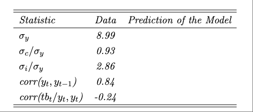
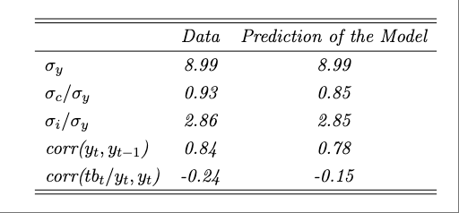
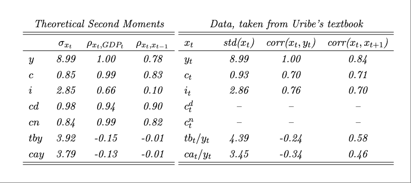

Exercise 4.8
Durable Consumption, II
Problem
Consider an economy populated by a large number of identical households with preferences described by the lifetime utility function
\[ E_0 \sum_{t=0}^{\infty} \beta^t \frac{ \left[ \left( c^n_t - \frac{h_t^{\omega}}{\omega} \right) s_t^{\gamma} \right]^{1-\sigma}-1 }{1-\sigma}, \]
where \(c^n_t\) denotes consumption of nondurable goods, \(h_t\) denotes hours worked, and \(s_t\) denotes the stock of durable consumption goods. The parameter \(\beta \in (0,1)\) denotes the subjective discount factor, \(\gamma,(\omega-1), (\sigma-1) > 0\) are preference parameters, and \(E_t\) denotes the expectations operator conditional on information available in period \(t\).
The law of motion of the stock of durables is assumed to be of the form
\[ s_t = (1 - \delta) s_{t-1} + c^d_t, \]
where \(c^d_t\) denotes durable consumption in period \(t\), and \(\delta \in (0,1)\) denotes the depreciation rate. The sequential budget constraint of the household is given by
\[ d_t = (1 + r_{t-1}) d_{t-1} + c^n_t + c^d_t + \frac{\phi^d}{2}(s_t - s_{t-1})^2 + i_t + \frac{\phi^k}{2}(k_{t+1} - k_t)^2 - A_t k_t^{\alpha} h_t^{1 - \alpha}, \]
where \(d_t\) denotes debt acquired in period \(t\) and maturing in period \(t+1\), \(r_t\) denotes the interest rate on assets held between periods \(t\) and \(t+1\), \(i_t\) denotes gross investment, \(k_t\) denotes the stock of physical capital, and \(A_t\) represents a technology factor assumed to be exogenous and stochastic. The parameters \(\phi^d, \phi^k > 0\) govern the degree of adjustment costs in the accumulation of durable consumption goods and physical capital, respectively. The parameter \(\alpha\) resides in the interval \((0,1)\).
The capital stock evolves over time according to the law of motion
\[ k_{t+1} = (1 - \delta) k_t + i_t. \]
Note that we assume that physical capital \(k_t\) is predetermined in period \(t\) and that investment \(i_t\) takes one period to become productive capital. In contrast, the stock of consumer durables \(s_t\) is nonpredetermined in period \(t\), and expenditures in consumer durables in period \(t\), \(c^d_t\), become productive immediately. Finally, assume that the interest rate is debt elastic,
\[ r_t = r^* + \psi \left[ e^{\widetilde{d}_t - \bar{d}} - 1 \right], \]
where \(\widetilde{d}_t\) denotes the cross-sectional average level of debt per capita, and \(r^*\), \(\bar{d}\), and \(\psi\) are parameters. The productivity factor \(A_t\) evolves according to the expression
\[ \ln A_{t+1} = \rho \ln A_t + \epsilon_{t+1}, \]
where \(\epsilon_t\) is a white noise process with mean zero and variance \(\sigma^2_\epsilon\), and \(\rho \in (0,1)\) is a parameter. Assume that \(\beta(1 + r^*) = 1\).
Derive the complete set of equilibrium conditions.
Derive the deterministic steady state. Specifically, find analytical expressions for the steady-state values of \(c^n_t\), \(h_t\), \(s_t\), \(k_{t+1}\), \(d_t\), \(r_t\), \(i_t\), \(tb_t\), and \(ca_t\) in terms of the structural parameters of the model \(\sigma\), \(\beta\), \(\delta\), \(\omega\), \(\alpha\), \(\gamma\), \(r^*\), and \(\bar{d}\). Here, \(tb_t\) and \(ca_t\) denote, respectively, the trade balance and the current account.
Assume the following parameter values: \(\sigma = 2\), \(\delta=0.1\), \(r^*=0.04\), \(\alpha = 0.3\), and \(\omega = 1.455\). Calibrate \(\bar{d}\) and \(\gamma\) so that in the steady state the debt-to-output ratio is 25 percent and the nondurable-consumption-to-output ratio is 68 percent. Report the implied numerical values of \(\gamma\) and \(\bar{d}\). Also report the numerical steady-state values of \(r_t\), \(d_t\), \(h_t\), \(k_t\), \(c^n_t\), \(s_t\), \(c^d_t\), \(i_t\), \(tb_t\), \(ca_t\), and \(y_t \equiv A_t k_t^{\alpha} h_t^{1-\alpha}\).
Approximate the equilibrium dynamics using a first-order perturbation technique. In performing this approximation, express all variables in logs, except for the stock of debt, the interest rate, the trade balance, the current account, the trade-balance-to-output ratio, and the current-account-to-output ratio. You are asked to complete the calibration of the model by setting values for \(\psi\), \(\phi^d\), \(\phi^k\), \(\rho\), and \(\sigma_{\epsilon}\) to target key empirical regularities of medium-sized emerging countries documented in chapter1. Specifically, the targets are a standard deviation of output, \(\sigma_y\), of 8.99 percent, a relative standard deviation of consumption, \(\sigma_c/\sigma_y\), of 0.93, a relative standard deviation of gross investment, \(\sigma_i/\sigma_y\), of 2.86, a serial correlation of output of 0.84, and a correlation between the trade-balance-to-output ratio and output of -0.24. Define the distance as follows. Let \(z(\psi, \phi^d, \phi^k, \rho,\sigma_{\epsilon}) \equiv x(\psi, \phi^d, \phi^k, \rho,\sigma_{\epsilon})-x^*\), where \(x^*\) is the \(5 \times 1\) vector of empirical targets (the five numbers given above), and \(x(\psi, \phi^d, \phi^k, \rho,\sigma_{\epsilon})\) is the \(5 \times 1\) vector of theoretical counterparts as a function of the parameters. Let \(D(\psi, \phi^d, \phi^k, \rho,\sigma_{\epsilon}) \equiv \sqrt{z(\psi, \phi^d, \phi^k, \rho,\sigma_{\epsilon})' z(\psi, \phi^d, \phi^k, \rho,\sigma_{\epsilon})}\) be the distance between the target and its theoretical counterpart.
Report the values of \(\psi\), \(\phi^d\), \(\phi^k\), \(\rho\), and \(\sigma_{\epsilon}\) that you find.
Complete the following table:

- Produce a table displaying the model predictions. The table should contain the unconditional standard deviation, correlation with output, and the first-order serial correlation of output, consumption, investment, consumption of durables, consumption of nondurables, the trade-balance-to-output ratio, and the current-account-to-output ratio. For consumption, consumption of durables, consumption of nondurables, and investment, report the standard deviation relative to output. Discuss how well the model is able to explain actual observed second moments that were not targeted in the calibration. Use the second mements reported in Table 1.2 to compare the model’s predictions to actual data.
Answer
1.
The complete set of equilibrium conditions can be derived by taking first-order conditions from the household’s problem. The Lagrangian is:
\[ \begin{align*} \mathcal{L} = E_0 \sum_{t=0}^{\infty} \beta^t \Bigg\{ \;\; & \frac{ \left[ \left( c^n_t - \frac{h_t^{\omega}}{\omega} \right) s_t^{\gamma} \right]^{1-\sigma} - 1 }{1 - \sigma} \\ & + \lambda_t \Big[ d_t + A_t k_t^{\alpha} h_t^{1-\alpha} - (1 + r_{t-1}) d_{t-1} \\ & \quad - c^n_t - (s_t - (1 - \delta)s_{t-1}) - \frac{\phi^d}{2}(s_t - s_{t-1})^2 \\ & \quad - (k_{t+1} - (1 - \delta)k_t) - \frac{\phi^k}{2}(k_{t+1} - k_t)^2 \Big] \Bigg\} \end{align*} \]
First-order conditions:
- For \(c^n_t\):
\[ \left( c^n_t - \frac{h_t^{\omega}}{\omega} \right)^{-\sigma} s_t^{\gamma(1-\sigma)} = \lambda_t \tag{1} \]
- For \(h_t\):
\[ \left( c^n_t - \frac{h_t^{\omega}}{\omega} \right)^{-\sigma} s_t^{\gamma(1-\sigma)} h_t^{\omega - 1} = \lambda_t (1-\alpha) A_t \left( \frac{k_t}{h_t} \right)^{\alpha} \tag{2} \]
Dividing (2) by (1):
\[ h_t^{\omega - 1} = (1 - \alpha) A_t \left( \frac{k_t}{h_t} \right)^{\alpha} \tag{3} \]
- For \(d_t\):
\[ \lambda_t = \beta (1 + r_t) E_t \lambda_{t+1} \tag{4} \]
- For \(k_{t+1}\):
\[ \lambda_t \left[1 + \phi^k (k_{t+1} - k_t) \right] = \beta E_t \lambda_{t+1} \left[1 - \delta + \alpha A_{t+1} \left( \frac{k_{t+1}}{h_{t+1}} \right)^{\alpha - 1} + \phi^k (k_{t+2} - k_{t+1}) \right] \tag{5} \]
- For \(s_t\):
\[ \lambda_t \left[1 + \phi^d (s_t - s_{t-1}) \right] = \gamma \left( \left( c^n_t - \frac{h_t^{\omega}}{\omega} \right) s_t^{\gamma} \right)^{1-\sigma} s_t^{-1} + \beta E_t \lambda_{t+1} \left[ 1 - \delta + \phi^d (s_{t+1} - s_t) \right] \tag{6} \]
- Budget constraint:
\[ d_t + A_t k_t^{\alpha} h_t^{1-\alpha} = (1 + r_{t-1}) d_{t-1} + c^n_t + (s_t - (1 - \delta) s_{t-1}) + \frac{\phi^d}{2}(s_t - s_{t-1})^2 + (k_{t+1} - (1 - \delta)k_t) + \frac{\phi^k}{2}(k_{t+1} - k_t)^2 \tag{7} \]
- Interest rate:
\[ r_t = r^* + \psi \left( e^{d_t - \bar{d}} - 1 \right) \tag{8} \]
- Transversality condition:
\[ \lim_{j \to \infty} E_t \left[ \frac{d_{t+j}}{\prod_{l=0}^j (1 + r_{t+l})} \right] = 0 \tag{9} \]
- Technology process:
\[ \ln A_{t+1} = \rho \ln A_t + \epsilon_{t+1} \tag{10} \]
2.
In steady state:
Set \(d = \bar{d}\)
Capital-labor ratio:
\[ \kappa = \frac{k}{h} = \left( \frac{\beta^{-1} - (1 - \delta)}{\alpha} \right)^{\frac{1}{\alpha - 1}} \tag{11} \]
- Hours worked:
\[ h = \left[ (1 - \alpha) \kappa^{\alpha} \right]^{\frac{1}{\omega - 1}} \tag{12} \]
- Capital:
\[ k = \kappa h \tag{13} \]
- Output:
\[ y = k^{\alpha} h^{1 - \alpha} \tag{14} \]
- Investment:
\[ i = \delta k \tag{15} \]
- Durables:
\[ c^d = \delta s \tag{16} \]
- Durable stock:
\[ s = \left[ \frac{\gamma (c^n - h^{\omega} / \omega)}{1 - \beta(1 - \delta)} \right] \tag{17} \]
- Durable flow:
\[ c^d = A c^n + B, \quad A = \frac{\delta \gamma}{1 - \beta(1 - \delta)}, \quad B = -A \frac{h^{\omega}}{\omega} \tag{18} \]
- Consumption of nondurables:
\[ c^n = \frac{y - i - rd - B}{1 + A} \tag{19} \]
- Trade balance:
\[ tb = r d \tag{20} \]
- Current account:
\[ ca = 0 \tag{21} \]
3.
Calibrated values:
- \(\gamma = 0.6478\)
- \(\bar{d} = 0.3244\)
Numerical steady-state values:
| Variable | Value |
|---|---|
| \(r\) | 0.04 |
| \(d\) | 0.32 |
| \(h\) | 0.94 |
| \(k\) | 2.78 |
| \(c^n\) | 0.88 |
| \(s\) | 1.24 |
| \(\lambda\) | 13.04 |
| \(c^d\) | 0.12 |
| \(c\) | 1.01 |
| \(i\) | 0.28 |
| \(tb\) | 0.01 |
| \(tby\) | 0.01 |
| \(ca\) | 0 |
| \(cay\) | 0 |
| \(A\) | 1 |
| \(y\) | 1.30 |
4.
Calibrated parameters targeting second moments:
| Parameter | Value |
|---|---|
| \(\sigma_{\epsilon}\) | 2.8726 |
| \(\rho\) | 0.5621 |
| \(\phi^d\) | 0.0000 |
| \(\phi^k\) | 0.0212 |
| \(\psi\) | 0.0320 |

Distance norm: \(0.1296\)
5.

Additional Equilibrium Conditions and Steady-State Derivations
The complete set of equilibrium conditions:
\[ d_t = (1 + r_{t-1}) d_{t-1} + c^n_t + s_t - (1 - \delta) s_{t-1} + \frac{\phi^d}{2}(s_t - s_{t-1})^2 + k_{t+1} - (1 - \delta)k_t + \frac{\phi^k}{2}(k_{t+1} - k_t)^2 - A_t k_t^{\alpha} h_t^{1 - \alpha} \]
\[ \left[ \left( c^n_t - \frac{h_t^{\omega}}{\omega} \right) s_t^{\gamma} \right]^{-\sigma} s_t^{\gamma} = \lambda_t \]
\[ h_t^{\omega - 1} = (1 - \alpha) A_t \left( \frac{k_t}{h_t} \right)^{\alpha} \]
\[ \lambda_t = \beta (1 + r_t) E_t \lambda_{t+1} \]
\[ \lambda_t \left[ 1 + \phi^k (k_{t+1} - k_t) \right] = \beta E_t \lambda_{t+1} \left[ 1 - \delta + \alpha A_{t+1} \left( \frac{k_{t+1}}{h_{t+1}} \right)^{\alpha - 1} + \phi^k (k_{t+2} - k_{t+1}) \right] \]
\[ \lambda_t \left[ 1 + \phi^d (s_t - s_{t-1}) \right] = \gamma \left[ \left( c^n_t - \frac{h_t^{\omega}}{\omega} \right) s_t^{\gamma} \right]^{1 - \sigma} s_t^{-1} + \beta E_t \lambda_{t+1} \left[ 1 - \delta + \phi^d (s_{t+1} - s_t) \right] \]
\[ r_t = r^* + \psi \left[ e^{d_t - \bar{d}} - 1 \right] \]
Calibration Formula Summary (Steady State)
Given: \(r^*\), \(\beta\), \(\delta\), \(\alpha\), \(\omega\), \(s_{c^n} \equiv c^n / y\), and \(s_{d/y} \equiv d / y\)
\[ d = \bar{d} \]
\[ \kappa \equiv \frac{k}{h} = \left( \frac{\beta^{-1} - (1 - \delta)}{\alpha} \right)^{\frac{1}{\alpha - 1}} \]
\[ h = \left[ (1 - \alpha) \kappa^{\alpha} \right]^{\frac{1}{\omega - 1}} \]
\[ k = \kappa h \]
\[ y = k^{\alpha} h^{1 - \alpha} \]
\[ \bar{d} = s_{d/y} \cdot y \]
\[ \gamma = \frac{1 - i/y - r d/y - s_{c^n}}{s_{c^n} - \frac{h^{\omega}}{\omega y}} \cdot \frac{1 - \beta (1 - \delta)}{\delta} \]